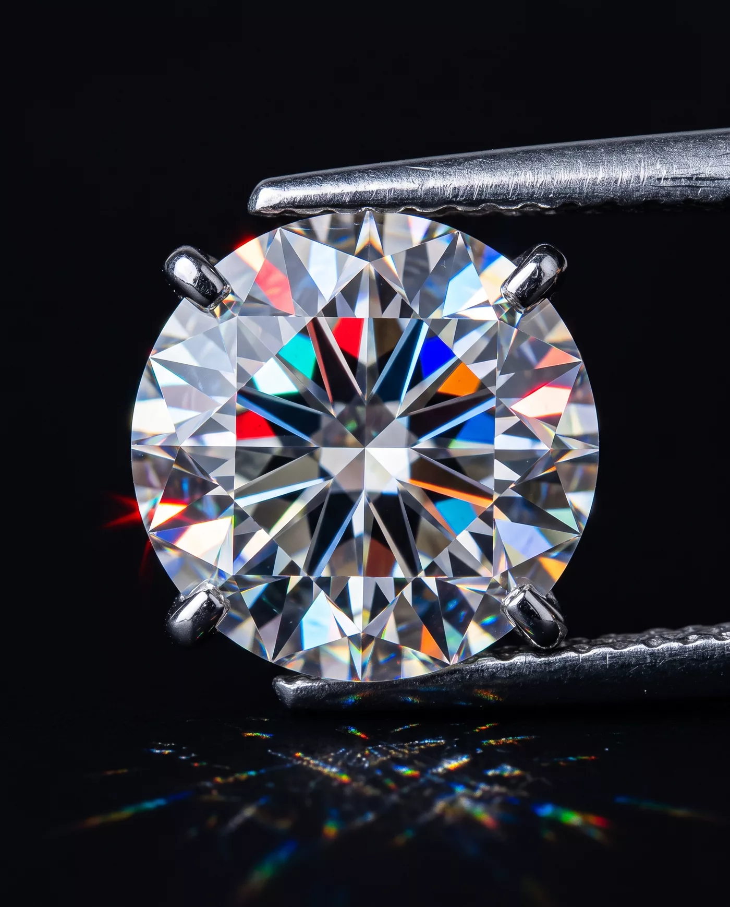

SOLITAIRE Nº 1
A single stone, four claws, and the good sense to say nothing further.
price on application
Light, cut to measure.
Haute joaillerie · est. MCMXXVII
The cut
I · The rough
rough — untouched
A stone arrives as weather: opaque, reluctant. We look at it for weeks before anyone is allowed to touch it.
In the flesh
Under one raised lamp, on black velvet, the stone is asked the only question that matters: what do you do with almost no light at all?

The pieces
Metal exists here to lose gracefully. Every mounting is drawn so the eye arrives at the stone and stays.
A single stone, four claws, and the good sense to say nothing further.
price on application
Thirty-one graduated brilliants; a river that has decided against banks.
price on application
Worn at the ear, where it is seen mostly by other people. That is the point.
price on application
Private viewing
It keeps appointments. One client, one stone, one hour of honest lamplight — Place Vendôme, first floor, the door without a name.
request an appointment